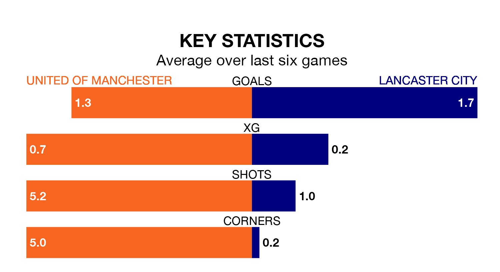

Lancaster City visit United of Manchester at Broadhurst Park on Saturday on the back of four consecutive wins in the Northern Premier League.
Lancaster have picked up 12 points from their last six games, and they face a F.C. United side who lost their last match, and have collected six points from the last possible 18.
In the last 10 years, United of Manchester and Lancaster have played each other on nine occasions. United of Manchester won two of them, Lancaster three, and they drew four times.
On average, F.C. United scored 0.7 goals and Lancaster 0.9 in those matches.
Their last meeting was on November 11, when they played out a 0-0 draw.
United of Manchester are 15th in the table after 38 games, of which they have won 14 and drawn four, earning 46 points.
Lancaster are six places ahead of F.C. United in ninth, with 18 wins and eight draws putting them on 62 points.
With 53 goals in 38 games so far this season, the home team are scoring at below the league average rate with 1.4 goals per game. And they are conceding more than average, letting in 73 goals at a rate of 1.9 per game.
City are also below average scorers, with 1.5 goals per game, compared to a league average of 1.6. They have conceded 1.4 goals per game.
United of Manchester's last match was on April 20, a 3-1 loss against Guiseley.
Lancaster beat Warrington Rylands 2-1 last time out, on April 13.
Updated: 07:59 (UTC), 26/04/24